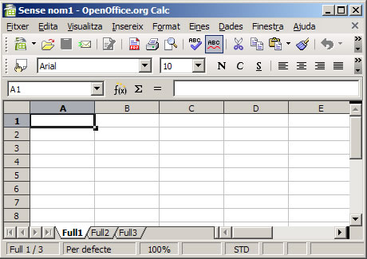
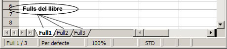
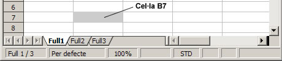
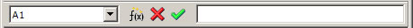
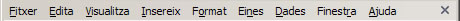
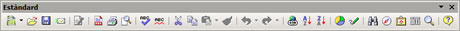
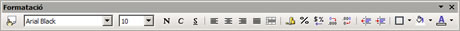

UF4. Fulls de càlcul
G rapida - estructura
Estructura d'un full de càlcul
- Llibre:Els arxius de treball del programa OpenOffice.org Calc s'anomenen llibres. Aquests estan formats per diferents blocs d'informació on s'emmagatzema la informació introduïda per l'usuari, que s'anomenen fulls
 - Full: És cada un dels blocs d'informació on s'emmagatzema la informació introduïda per l'usuari. La informació en els fulls està organitzada en cel·les. Incialment, el programa OpenOffice.org Calc presenta els llibres formats per tres fulls. Aquests es poden distingir pels noms full1, full2 i full3, com podeu observar a la figura.
 - Cel·la: Els fulls es presenten en forma d'una graella de caselles organitzades en files i columnes. Les files estan numerades amb un número entre 1 i 65536, i les columnes s'identifiquen per una lletra o dues entre A i IV. Cada una de les caselles en què està dividit un full rep el nom de cel·la. Les cel·les poden contenir diferents tipus de dades: numèriques, de text, fórmules … Una cel·la s'identifica per la columna i fila a què pertany: B7 seria la cel·la corresponent a la setena filera de la segona columna (la columna B):
 - Barra de fórmules: És l'eina més important dels fulls de càlcul. La barra de fórmules s'utilitza per escriure i editar fórmules, i permet obtenir en una cel·la el resultat de l'expressió que s'hagi introduït
 - Barra de menús: Conté totes les accions a realitzar amb el programa agrupades en menús desplegables. Cada un d'aquests menús conté les funcions del programa agrupades, per categories afins
 - Barres d'eines: Contenen les icones que executen, d'una manera immediata, les operacions més habituals de l'OpenOffice.org Calc, com ara (Obre), (Desa), (Copia), (Retalla), (Enganxa)…, situades a la barra d'eines Estàndard

També, les operacions relacionades amb el format en què es presenta el contingut de la cel·la, com ara (Nom del tipus de lletra), (Mida de la lletra), (Negreta), (Cursiva), (Subratllat), situades a la barra d'eines Formatació
 - Barra d'estat: Mostra diferent informació relativa al full de càlcul com ara el número de full respecte del total de fulls del llibre en què ens trobem situats, l'estil de pàgina adjudicat al full actual, el valor d'escala de la visualització actual (Zoom), la modalitat d'edició, inserció o sobreescriptura …